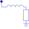
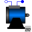

SquirrelCageSquirrel Cage |

|
Information
This information is part of the Modelica Standard Library maintained by the Modelica Association.
Model of a squirrel cage / symmetrical damper cage in two axis.
The squirrel cage has an optional (conditional) HeatPort, which can be enabled or disabled by the Boolean parameter useHeatPort. Temperatures of both axis are the same, both losses are added. Material properties alpha of both axis are the same.
Parameters (6)
| useHeatPort |
Value: false Type: Boolean Description: = true, if heatPort is enabled |
|---|---|
| T |
Value: T_ref Type: Temperature (K) Description: Fixed device temperature if useHeatPort = false |
| Lrsigma |
Value: Type: Inductance (H) Description: Rotor stray inductance per phase translated to stator |
| Rr |
Value: Type: Resistance (Ω) Description: Rotor resistance per phase translated to stator at T_ref |
| T_ref |
Value: 293.15 Type: Temperature (K) Description: Reference temperature |
| alpha |
Value: 0 Type: LinearTemperatureCoefficient (¹/K) Description: Temperature coefficient of resistance at T_ref |
Connectors (3)
| heatPort |
Type: HeatPort_a Description: Conditional heat port |
|
|---|---|---|
| spacePhasor_r |
Type: SpacePhasor |
|
| i |
Type: RealOutput[2] Description: Currents out from squirrel cage |
Used in Components (1)
|  |
Modelica.Electrical.Machines.BasicMachines.InductionMachines Induction machine with squirrel cage rotor |